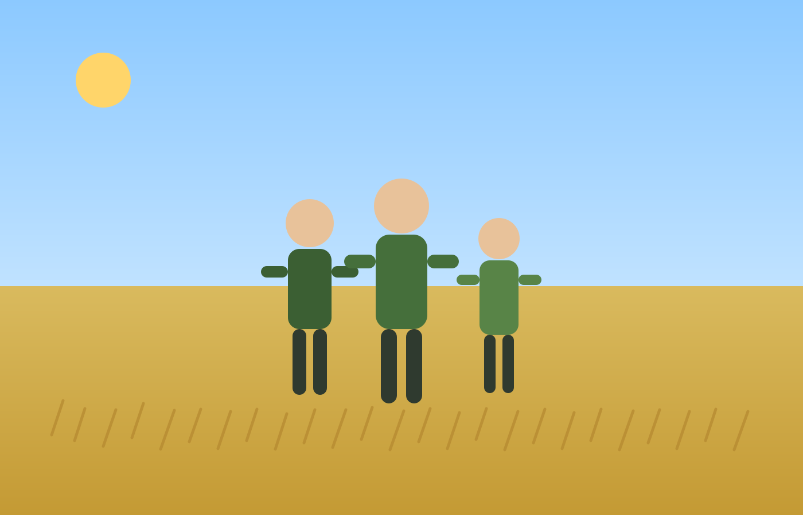

Campañas de cereal
Realizamos labores de preparación, siembra y cosecha en campañas de cereal de secano y regadío.

Especialistas en servicios agrícolas: cosecha, siembra, abono, labrado y más.
Conoce nuestra experiencia en el sector agrícola y nuestro compromiso con un trabajo profesional y eficiente.

Ya son tres generaciones de la familia del Cid dedicadas a la agricultura, con un profundo conocimiento de las necesidades del sector y un compromiso con la calidad y la eficiencia en cada proyecto que emprendemos.
Además, contamos con la tecnología más puntera para nuestros trabajos agrícolas, lo que nos permite ofrecer soluciones innovadoras y adaptadas a las necesidades de nuestros clientes.
Mostramos campañas y colaboraciones en diferentes fincas y explotaciones agrícolas.
Realizamos labores de preparación, siembra y cosecha en campañas de cereal de secano y regadío.
Apoyamos durante todo el ciclo agrícola con maquinaria especializada y planificación técnica.
Ofrecemos un servicio agrícola integral, adaptado al calendario de cada cultivo y a las necesidades reales de cada cliente.
Trabajamos con maquinaria moderna y personal con experiencia para asegurar resultados eficientes, puntuales y de calidad en cada campaña.
Realizamos servicios tanto para grandes fincas como para pequeños agricultores, ofreciendo soluciones flexibles y ajustadas a cada explotación.